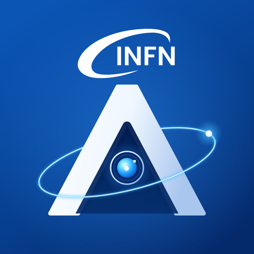

01 · THE PROJECT◎
Why ARGUS exists
The research vision, the challenge of complex infrastructure, and the ideas behind connected operational knowledge.

ARGUS.Complex systems need connected knowledge. ARGUS brings assets, documents, work and the people behind them into one clearer picture.
Start with the research project, see the platform in action, or learn how to use it.
The research vision, the challenge of complex infrastructure, and the ideas behind connected operational knowledge.
A connected workspace for assets, tickets, activities, documents, maps and AI assisted discovery.
A guided first route and searchable manuals, generated from the help included in the application.
EPIK8S operates EPICS control systems in accelerator facilities; ARGUS keeps the equipment, work and documentation around them connected.
Open the Knowledge Hub when you are ready to work, or read the guide to find your way around.